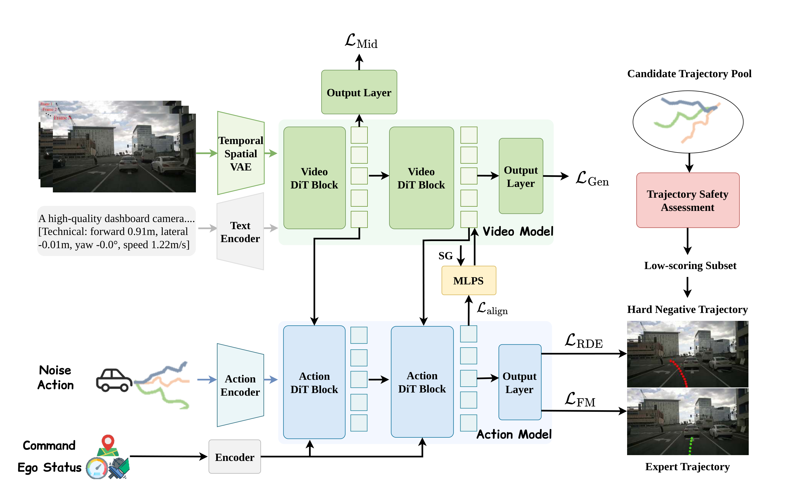
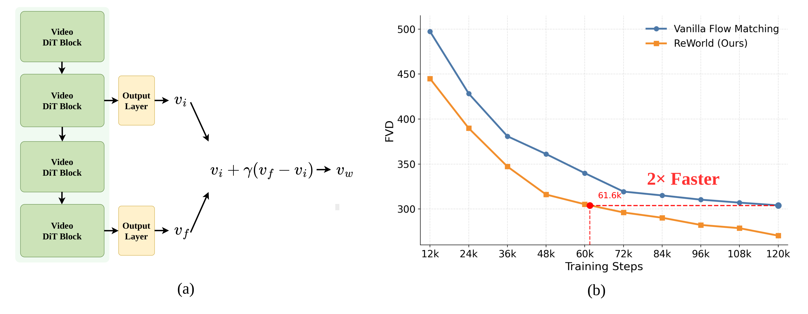
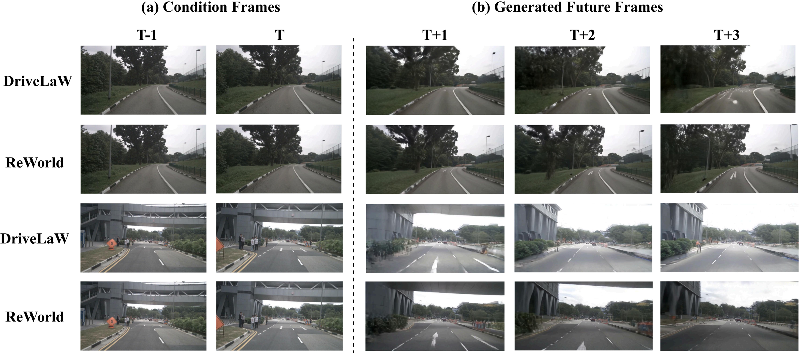
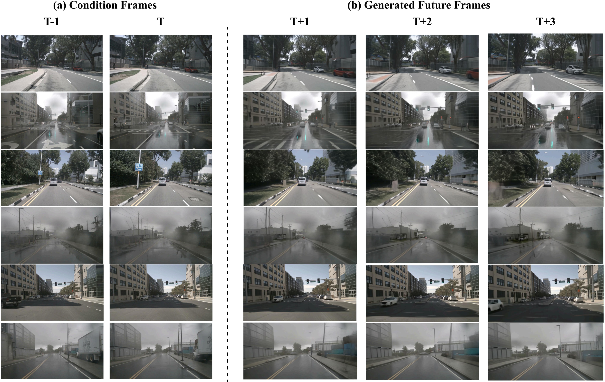
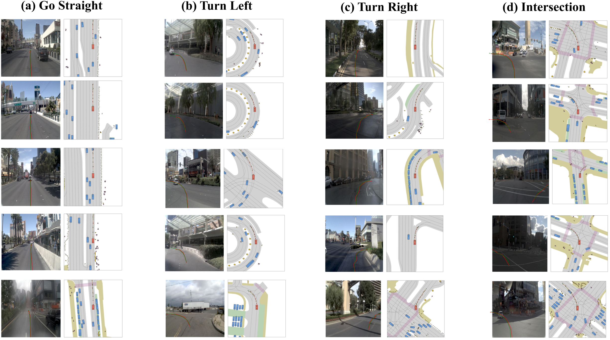

World Action Models (WAMs) unify future environment prediction with action generation for autonomous driving, yet existing approaches optimize only the final outputs, leaving intermediate representations as incidental byproducts. ReWorld is the first representation learning framework specifically designed for autonomous-driving WAMs. It explicitly optimizes the latent world-to-action pathway through three complementary mechanisms: future-predictive supervision on intermediate Video DiT states, cross-modal alignment of Action DiT states with attended video readouts, and hard-negative repulsion that separates the expert trajectory from nearby unsafe alternatives. All supervision is constructed from the WAM's own generation targets and attended features — requiring no external encoders or teacher models and introducing only 0.3% additional per-step training cost.
A Video DiT learns a latent representation of future scene evolution; its mid-denoising states condition an Action DiT for trajectory generation. ReWorld explicitly optimizes this world-to-action pathway in three stages.

Three stages with distinct optimization roles — formation, transfer, and decision-oriented shaping — applied sequentially rather than as a single combined objective.
Auxiliary heads let intermediate Video DiT blocks predict the future-flow target directly, not just through the final output. The induced cross-layer prediction hierarchy doubles as a free self-guidance signal at sampling — and converges roughly 2× faster.
With the Video DiT frozen, post-cross-attention action states are aligned with the video readouts they just attended to. World knowledge is retained in the states that actually drive trajectory generation, not merely retrieved in passing.
Both branches are fine-tuned jointly while predictions are repelled from geometrically close yet low-scoring trajectories mined offline with the NAVSIM simulator — separating expert behavior from nearby unsafe alternatives.
Intermediate supervision induces a systematic discrepancy between intermediate and final velocity predictions — ReWorld turns it into a free correction direction at inference.

The experiment we care most about — probing the representation itself, not just the outputs it produces.
Driving-domain pretraining alone adds only +1.5 over LTX-Video; the representation curriculum adds +11.9 — motion structure learned for driving transfers to general action recognition.
Best FVD at 1.003× per-step cost — teacher-based and extra-forward methods pay ~1.4–1.7× for less gain. Generator-native supervision wins because it matches the temporal structure of the generative process itself.
Evaluated at all three levels — generation output, closed-loop decision, and representation quality.
| Method | Venue | NC ↑ | DAC ↑ | TTC ↑ | Comf. ↑ | EP ↑ | PDMS ↑ |
|---|---|---|---|---|---|---|---|
| UniAD | CVPR'23 | 97.8 | 91.9 | 92.9 | 100 | 78.8 | 83.4 |
| PARA-Drive | CVPR'24 | 97.9 | 92.4 | 93.0 | 99.8 | 79.3 | 84.0 |
| DiffusionDrive (cam+lidar) | CVPR'25 | 98.2 | 96.2 | 94.7 | 100 | 82.2 | 88.1 |
| Epona | ICCV'25 | 97.9 | 95.1 | 93.8 | 99.9 | 80.4 | 86.2 |
| WoTE (cam+lidar) | ICCV'25 | 98.5 | 96.8 | 94.9 | 99.9 | 81.9 | 88.3 |
| DriveVLA-W0 | ICLR'26 | 98.4 | 95.3 | 95.2 | 100 | 80.9 | 87.2 |
| PWM | NeurIPS'25 | 98.6 | 95.9 | 95.4 | 100 | 81.8 | 88.1 |
| WorldDrive | arXiv'26 | 98.4 | 96.8 | 95.2 | 100 | 83.3 | 89.0 |
| DriveLaW | CVPR'26 | 99.0 | 97.1 | 96.7 | 100 | 81.3 | 89.1 |
| ReWorld (Ours) | — | 99.1 | 98.2 | 97.7 | 99.8 | 82.0 | 90.4 |
| Method | FID ↓ | FVD ↓ |
|---|---|---|
| DriveDreamer | 52.6 | 452.0 |
| DrivingGPT | 12.8 | 142.6 |
| DriveWorld | 7.4 | 90.9 |
| Vista | 6.9 | 89.4 |
| Epona | 7.5 | 82.8 |
| DriveLaW | 4.6 | 81.3 |
| ReWorld (Ours) | 4.4 | 61.9 |
| Configuration | L_align | L_RDE | PDMS ↑ |
|---|---|---|---|
| DriveLaW | — | — | 89.1 |
| + Align only | ✓ | — | 89.5 |
| + RDE only | — | ✓ | 89.8 |
| ReWorld (full) | ✓ | ✓ | 90.4 |
| Supervised block | FVD ↓ | γ | FVD ↓ |
|---|---|---|---|
| 2 | 65.5 | 1.0 | 78.9 |
| 8 | 61.9 | 1.4 | 61.9 |
| 12 | 62.7 | 1.6 | 69.7 |
| 20 | 64.3 | 1.8 | 68.2 |
| λ_align (Stage 2) | PDMS ↑ | λ_RDE (Stage 3) | PDMS ↑ |
|---|---|---|---|
| 0.01 | 88.8 | 0.02 | 89.4 |
| 0.03 | 89.2 | 0.03 | 89.6 |
| 0.05 | 89.5 | 0.04 | 90.4 |
| 0.07 | 88.2 | 0.05 | 89.7 |
| 0.10 | 87.7 | 0.10 | 85.5 |
1s of history (8 frames @ 8Hz) → 3s of generated future (24 frames). Each scene is shown as a DriveLaW–ReWorld pair.



If you find ReWorld useful, please consider citing:
@article{xia2026reworld,
title = {ReWorld: Learning Better Representations for World Action Models},
author = {Xia, Tianze and Zhou, Lijun and Xiong, Kaixin and Yao, Jingfeng and Zhu, Yu
and Zhu, Zhenxin and Wang, Bing and Chen, Guang and Ye, Hangjun
and Liu, Wenyu and others},
journal = {arXiv preprint arXiv:2606.27504},
year = {2026}
}